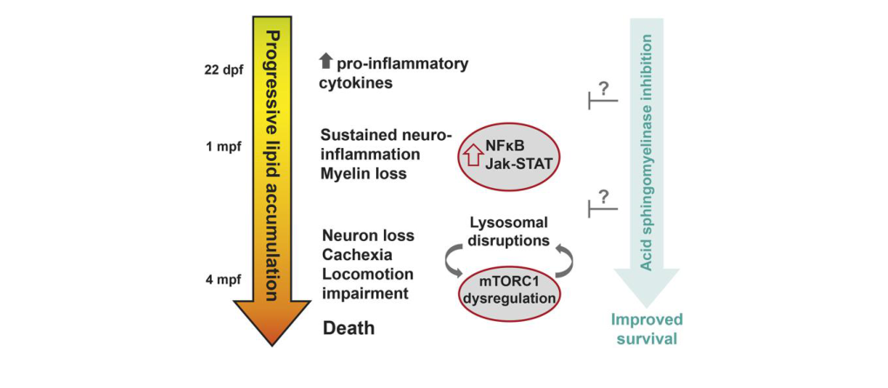

Combined Saposin Deficiency (Combined PSAP Deficiency): Disease Characteristics Research Report
Executive summary
Combined saposin deficiency (also called combined PSAP/prosaposin deficiency) is an ultra-rare, autosomal recessive lysosomal storage disorder caused by biallelic loss-of-function variants in PSAP, leading to absence of saposins A–D and impaired catabolism of multiple sphingolipids. Clinically, classic cases present neonatally/early infancy with severe neurodegeneration (often with seizures and bulbar dysfunction), hepatosplenomegaly, hematologic abnormalities, and early death. Recent work (2023) created a CRISPR zebrafish psap knockout model that recapitulates demyelination and shows that genetic reduction of acid sphingomyelinase (SMPD1/smpd1) modestly prolongs survival, supporting a mechanistically motivated therapeutic hypothesis for modulating sphingomyelin/ceramide flux in sphingolipidoses. (bhat2023combinedsaposindeficiency pages 1-2, kuchar2009prosaposindeficiencyand pages 2-3, zhang2023azebrafishmodel pages 1-3, zhang2023azebrafishmodel media d6e12bf5)
1. Disease information
1.1 Concise overview
Combined saposin deficiency is a lysosomal storage disorder due to prosaposin deficiency (loss of saposins A–D), resulting in multi-sphingolipid storage and prominent neurologic and visceral disease. In a 2023 case report, the abstract states: “Combined saposin deficiency (OMIM #611721), an exceedingly rare lysosomal storage disorder, is caused by a mutation in the gene PSAP … The typical manifestation … is of severe neurological features in the neonatal period, hepatosplenomegaly, thrombocytopenia, and early death.” (Bhat et al.; publication date: 2023-03; URL: https://doi.org/10.1016/j.mjafi.2021.01.024) (bhat2023combinedsaposindeficiency pages 1-2)
1.2 Key identifiers
- OMIM: 611721 (reported in clinical case literature) (bhat2023combinedsaposindeficiency pages 1-2)
- MONDO: MONDO:0012719 (“combined PSAP deficiency”; OpenTargets disease mapping) (OpenTargets Search: Combined saposin deficiency,Prosaposin deficiency)
Not found in the retrieved corpus: Orphanet ORPHA ID, ICD-10/ICD-11 code, MeSH ID. These are likely available in external curated resources (e.g., Orphanet/MeSH browsers), but were not extractable from the retrieved full-text evidence in this run.
1.3 Synonyms and alternative names
- Combined PSAP deficiency (OpenTargets Search: Combined saposin deficiency,Prosaposin deficiency)
- Prosaposin deficiency (kuchar2009prosaposindeficiencyand pages 1-2)
- PSAP deficiency (bhat2023combinedsaposindeficiency pages 2-3)
- Combined saposin A–D deficiency / complete prosaposin deficiency (hulkova2001anovelmutation pages 1-2)
1.4 Evidence source type
Evidence is primarily from individual patient case reports and small case series, plus model organism studies (zebrafish) and mechanistic reviews. (kuchar2009prosaposindeficiencyand pages 1-2, zhang2023azebrafishmodel pages 1-3)
2. Etiology
2.1 Disease causal factors
- Genetic cause: biallelic pathogenic variants in PSAP, which encodes prosaposin, the precursor cleaved into saposins A–D (bhat2023combinedsaposindeficiency pages 1-2, kuchar2009prosaposindeficiencyand pages 1-2).
- Mechanistic cause: loss of saposins impairs lysosomal sphingolipid hydrolysis across multiple steps, causing combined sphingolipid storage and downstream neurodegeneration/demyelination. (hulkova2001anovelmutation pages 1-2, zhang2023azebrafishmodel pages 5-7)
2.2 Risk factors
- Primary risk factor: inheriting two pathogenic PSAP alleles (autosomal recessive). (shaimardanova2023genetherapyof pages 2-4, bhat2023combinedsaposindeficiency pages 2-3)
- Environmental or infectious risk factors are not established for causation in the retrieved evidence.
2.3 Protective factors / gene–environment interactions
Not established in the retrieved evidence.
3. Phenotypes
3.1 Core phenotype spectrum (human)
Across case literature, classic combined saposin deficiency is described as neonatal-onset severe neurovisceral disease.
Neurologic phenotypes (symptoms/signs) - Seizures/clonic fits and refractory seizures (bhat2023combinedsaposindeficiency pages 1-2, kuchar2009prosaposindeficiencyand pages 1-2) - Hypotonia and neurologic deterioration/regression (bhat2023combinedsaposindeficiency pages 1-2, bhat2023combinedsaposindeficiency pages 2-3) - Bulbar dysfunction: poor suck/swallow coordination, aspiration risk, feeding difficulty requiring tube feeding (bhat2023combinedsaposindeficiency pages 1-2, bhat2023combinedsaposindeficiency pages 2-3) - Progressive neurodegeneration and demyelination/leukodystrophy-like disease (hulkova2001anovelmutation pages 1-2, kuchar2009prosaposindeficiencyand pages 2-3)
Visceral and hematologic phenotypes - Hepatosplenomegaly (bhat2023combinedsaposindeficiency pages 1-2, kuchar2009prosaposindeficiencyand pages 1-2) - Thrombocytopenia and anemia reported (bhat2023combinedsaposindeficiency pages 1-2, li2025prosaposinamultifaceted pages 13-15)
Dermatologic/ocular phenotypes (reported in some cases) - Collodion membrane/ichthyosis-like skin findings reported in one neonatal case report (bhat2023combinedsaposindeficiency pages 1-2) - Optic disc atrophy and cherry-red spot described in PSAP-related severe infantile presentations (kuchar2009prosaposindeficiencyand pages 1-2)
Neuroimaging/pathology - Reported imaging abnormalities include cortical atrophy and white matter abnormalities in case literature, with additional malformations in some cases (bhat2023combinedsaposindeficiency pages 2-3, kuchar2009prosaposindeficiencyand pages 2-3). - Neuropathology in complete PSAP deficiency includes massive cortical neuron loss, astrocytosis, paucity of myelin, and active demyelination. (hulkova2001anovelmutation pages 1-2)
3.2 Age of onset, severity, progression, frequency
- Typical onset: neonatal / early infancy (bhat2023combinedsaposindeficiency pages 1-2, kuchar2009prosaposindeficiencyand pages 1-2).
- Severity: severe, progressive (bhat2023combinedsaposindeficiency pages 1-2).
- Frequency data: not available as robust percentages given the very small number of reported cases.
3.3 Quality of life impact
Given early severe neurologic impairment (seizures, feeding/respiratory failure, progressive neurodegeneration), the impact on daily functioning is profound; quantitative QoL instruments (EQ-5D/SF-36) were not reported in the retrieved evidence.
3.4 Suggested HPO terms (non-exhaustive)
- Seizures HP:0001250
- Hypotonia HP:0001252
- Neurodevelopmental delay HP:0001263
- Dysphagia / feeding difficulties HP:0002015
- Hepatosplenomegaly HP:0001433
- Thrombocytopenia HP:0001873
- Microcephaly HP:0000252
- Leukodystrophy / white matter abnormalities HP:0002415
- Demyelination HP:0001298
- Ichthyosis HP:0008064
(These term suggestions are ontology mappings for KB use; they are consistent with phenotypes described in the cited case reports.) (bhat2023combinedsaposindeficiency pages 1-2, kuchar2009prosaposindeficiencyand pages 1-2)
4. Genetic / molecular information
4.1 Causal gene and protein
- Gene: PSAP (prosaposin) (bhat2023combinedsaposindeficiency pages 1-2, kuchar2009prosaposindeficiencyand pages 1-2)
- Protein/function: Prosaposin is processed to saposins A–D, which are required cofactors/activators for multiple lysosomal sphingolipid hydrolases (bhat2023combinedsaposindeficiency pages 1-2, kuchar2009prosaposindeficiencyand pages 1-2).
4.2 Pathogenic variants (examples from primary literature)
Representative pathogenic variants (case-based; not exhaustive): - Frameshift deletion: PSAP c.803delG causing premature stop and complete deficiency (Hulkova et al., 2001; publication date 2001-04; URL: https://doi.org/10.1093/hmg/10.9.927) (hulkova2001anovelmutation pages 1-2) - Splice-acceptor variant: homozygous splice-acceptor mutation upstream of exon 10 leading to premature stop/low transcript (Kuchař et al., 2009; publication date 2009-03; URL: https://doi.org/10.1002/ajmg.a.32712) (kuchar2009prosaposindeficiencyand pages 1-2) - Truncating frameshift: c.1419_1422delCTTC (p.Phe474fsTer3) reported homozygous in a neonatal case with early fatality (Bhat et al., 2023; URL: https://doi.org/10.1016/j.mjafi.2021.01.024) (bhat2023combinedsaposindeficiency pages 2-3)
4.3 Variant classes and functional consequence
- Predominantly loss-of-function (frameshift/stop-gain/splice-disrupting) variants yielding absence of all four saposins. (bhat2023combinedsaposindeficiency pages 2-3, hulkova2001anovelmutation pages 1-2)
4.4 Inheritance
- Autosomal recessive is explicitly listed in a 2023 sphingolipidosis gene-therapy review table for combined saposin deficiency (PSAP; OMIM 611721). (shaimardanova2023genetherapyof pages 2-4)
- Consistent with biallelic pathogenic variants in reported cases. (bhat2023combinedsaposindeficiency pages 2-3)
4.5 Modifier genes / epigenetics / chromosomal abnormalities
Not established for combined saposin deficiency in the retrieved evidence.
5. Environmental information
No established environmental/lifestyle/infectious causal contributors were identified in the retrieved evidence; the disorder is primarily monogenic. (shaimardanova2023genetherapyof pages 2-4)
6. Mechanism / pathophysiology
6.1 Causal chain (upstream → downstream)
Upstream trigger: biallelic PSAP loss-of-function → prosaposin deficiency → absence of saposins A–D (hulkova2001anovelmutation pages 1-2).
Primary biochemical defect: failed activation/assistance of multiple lysosomal sphingolipid hydrolases → impaired degradation of diverse sphingolipids and glycosphingolipids, including lactosylceramide and glucosylceramide (hulkova2001anovelmutation pages 7-8, hulkova2001anovelmutation pages 1-2).
Downstream cellular/tissue consequences: multi-lipid storage in neurons and visceral tissues, with prominent myelin loss/demyelination, neurodegeneration, and neuroinflammatory responses; systemic storage can involve liver and other viscera. (zhang2023azebrafishmodel pages 5-7, hulkova2001anovelmutation pages 1-2)
6.2 Biochemical abnormalities (human pathology and model organism data)
Human (complete PSAP deficiency): storage includes (dominant) lactosylceramide and multiple other sphingolipids/glycosphingolipids (GlcCer, Gb3, sulphatides, ceramides; globotetraosylceramide also reported), with demyelination supported by cholesterol ester accumulation in glial phagocytes and myelin paucity. (hulkova2001anovelmutation pages 1-2, hulkova2001anovelmutation pages 8-9)
Zebrafish psap KO (2023): untargeted lipidomics show marked increases in lactosylceramide and hexosylsphingosine, with additional increases in ceramide and sphingomyelin; pathology shows widespread CNS myelin loss and liver foamy storage clusters. (Zhang et al., publication date 2023-06; URL: https://doi.org/10.1242/dmm.049995) (zhang2023azebrafishmodel pages 3-5, zhang2023azebrafishmodel pages 5-7)
6.3 Inflammation and signaling (2023 development)
In the zebrafish model, proinflammatory cytokines rise before mbpa (myelin basic protein a) loss, followed by NFκB/Jak-Stat activation and microglial activation coincident with onset of myelin loss; astrocyte activation and neuronal loss occur later. (zhang2023azebrafishmodel pages 9-11)
6.4 Cell types and ontology suggestions
Key cell types implicated (based on zebrafish marker data and human pathology): - Microglia (activated during early disease in zebrafish): CL:0000129 (zhang2023azebrafishmodel pages 9-11) - Astrocytes (gfap activation later): CL:0000127 (zhang2023azebrafishmodel pages 9-11) - Oligodendrocyte lineage dysfunction (mbpa decline without lineage marker loss): oligodendrocyte CL:0000128; oligodendrocyte progenitor cell CL:0002453 (zhang2023azebrafishmodel pages 5-7, zhang2023azebrafishmodel pages 9-11) - Neurons (progressive loss in zebrafish; neuronal storage/loss in human pathology): CL:0000540 (hulkova2001anovelmutation pages 1-2, zhang2023azebrafishmodel pages 9-11)
GO biological process term suggestions (mechanistically aligned): - Lysosomal lumen / lysosome: GO:0005764 (lysosome; cellular component) - Sphingolipid catabolic process: GO:0046512 - Glycosphingolipid catabolic process: GO:0006687 - Myelination: GO:0042552 - Neuroinflammatory response / inflammatory response: GO:0006954 - NF-κB signaling: GO:0043122 - JAK-STAT cascade: GO:0007259
CHEBI term suggestions (stored lipids; examples): - Lactosylceramide (CHEBI term exists; specific identifier not retrieved in this run) - Glucosylceramide - Glucosylsphingosine - Ceramide - Sphingomyelin - Sulfatide
(Only lipid names are directly supported in evidence; mapping to specific CHEBI IDs would require a CHEBI lookup resource not available in this tool run.) (hulkova2001anovelmutation pages 1-2, zhang2023azebrafishmodel pages 5-7)
6.5 Recent mechanistic figure evidence
Zhang et al. 2023 provides a schematic of disease progression and a survival curve demonstrating that smpd1 (acid sphingomyelinase) loss rescues shortened lifespan in psap mutant zebrafish. (zhang2023azebrafishmodel media d6e12bf5, zhang2023azebrafishmodel media 93708f73)
7. Anatomical structures affected
7.1 Organ/system level (supported by human and zebrafish evidence)
- Central nervous system / brain white matter (demyelination, neuronal loss) (hulkova2001anovelmutation pages 1-2, zhang2023azebrafishmodel pages 5-7)
- Liver and spleen (hepatosplenomegaly; foamy storage clusters in zebrafish liver; visceral storage in human pathology) (bhat2023combinedsaposindeficiency pages 1-2, zhang2023azebrafishmodel pages 5-7, hulkova2001anovelmutation pages 1-2)
UBERON term suggestions - Brain: UBERON:0000955 - Central nervous system: UBERON:0001017 - Liver: UBERON:0002107 - Spleen: UBERON:0002106
7.2 Subcellular localization
- Lysosome is the primary affected compartment (functional deficiency in lysosomal lipid degradation). (zhang2023azebrafishmodel pages 1-3, hulkova2001anovelmutation pages 1-2)
8. Temporal development
8.1 Onset
- Most described as neonatal onset with severe manifestations. (bhat2023combinedsaposindeficiency pages 1-2, kuchar2009prosaposindeficiencyand pages 1-2)
8.2 Progression/course
- Progressive neurodegeneration with severe early course; death in infancy is common in classic presentations. (bhat2023combinedsaposindeficiency pages 1-2, kuchar2009prosaposindeficiencyand pages 2-3)
9. Inheritance and population
9.1 Epidemiology
Quantitative prevalence/incidence estimates were not identified in the retrieved evidence.
The disorder is described as extremely rare with “less than 10 cases reported in worldwide literature” in a 2023 case report. (bhat2023combinedsaposindeficiency pages 1-2)
9.2 Consanguinity/founder effects
- One 2023 Indian neonatal case was explicitly from a non-consanguineous marriage. (bhat2023combinedsaposindeficiency pages 1-2)
- Some PSAP-related disorders are reported in consanguineous families in the broader PSAP literature referenced by a 2024 review, but specific founder mutations/carrier frequencies for combined saposin deficiency were not extractable from the retrieved text. (pavan2024deficiencyofglucocerebrosidase pages 17-18)
10. Diagnostics
10.1 Clinical tests and biomarkers (real-world implementations)
Enzyme activity assays A neonatal combined saposin deficiency case reported reduced lysosomal enzyme activities (skin fibroblasts), including β-glucosidase and β-galactocerebrosidase, supporting the diagnosis. (bhat2023combinedsaposindeficiency pages 1-2)
Urinary sphingolipids Kuchař et al. 2009 emphasizes that “Screening for urinary sphingolipids was crucial to the diagnosis … with electrospray ionization tandem mass spectrometry also providing quantification,” with multiple sphingolipids elevated and Gb3 showing the greatest increase. (publication date 2009-03; URL: https://doi.org/10.1002/ajmg.a.32712) (kuchar2009prosaposindeficiencyand pages 1-2)
Plasma lyso-lipids and macrophage activation markers (2024 update) A 2024 study comparing PSAP- and SCARB2-mediated GCase deficiency reports that plasma glucosylsphingosine and chitotriosidase are increased in PSAP-related cases (similar to GBA1-linked Gaucher disease), while SCARB2 deficiency showed only glucosylsphingosine elevation. (publication date 2024-06-16; URL: https://doi.org/10.3390/ijms25126615) (pavan2024deficiencyofglucocerebrosidase pages 1-2)
10.2 Genetic testing
- Clinical exome sequencing with Sanger confirmation in proband and parents was used in a 2023 case report. (bhat2023combinedsaposindeficiency pages 2-3)
- Given ultra-rarity and phenotypic overlap with other sphingolipidoses/leukodystrophies, WES/WGS or broad lysosomal disorder panels are practical approaches; this is consistent with case-based implementation but no formal guideline was found in the retrieved evidence.
10.3 Differential diagnosis
Key differentials include other sphingolipidoses and leukodystrophies with overlapping features: - Metachromatic leukodystrophy (including activator-deficient forms) (kuchar2009prosaposindeficiencyand pages 1-2) - Krabbe disease, Gaucher disease, Farber disease (via saposin–enzyme relationships) (bhat2023combinedsaposindeficiency pages 1-2)
10.4 Screening (newborn, carrier, cascade)
No evidence of routine newborn screening inclusion for PSAP deficiency was found in the retrieved corpus.
11. Outcome / prognosis
11.1 Mortality and survival statistics (case-based)
- A neonatal PSAP deficiency case in Kuchař et al. died at 55 days after repeated pulmonary infections. (kuchar2009prosaposindeficiencyand pages 2-3)
- A 2023 neonatal case died at 5 months (sepsis/multiorgan failure described). (bhat2023combinedsaposindeficiency pages 2-3)
Systematic survival statistics (e.g., Kaplan–Meier from cohorts) are not available due to extreme rarity.
12. Treatment
12.1 Current real-world management
Published case reports describe supportive care, including respiratory support, feeding support (tube/orogastric), anti-seizure management, skin care (emollients), and infection/sepsis management. (bhat2023combinedsaposindeficiency pages 1-2, bhat2023combinedsaposindeficiency pages 2-3)
12.2 Experimental / emerging therapeutic directions (2023–2024)
Model-organism therapeutic hypothesis (acid sphingomyelinase modulation) - In a 2023 zebrafish model, pharmacologic monomethylfumarate (MMF) did not prolong lifespan, but genetic reduction of acid sphingomyelinase (smpd1) did, suggesting SMPD1/acid sphingomyelinase as a potential target. (zhang2023azebrafishmodel pages 9-11, zhang2023azebrafishmodel media d6e12bf5)
Gene therapy and other platform approaches (review-level) - A 2023 review of gene therapy for sphingolipid metabolic disorders lists general therapeutic modalities used across sphingolipidoses—ERT, SRT, molecular chaperones, HSCT/BMT, supportive care, and gene therapy—and classifies combined saposin deficiency (PSAP; OMIM 611721) as an “extremely rare” fatal nervous-system disorder. (publication date 2023-02; URL: https://doi.org/10.3390/ijms24043627) (shaimardanova2023genetherapyof pages 2-4)
Clinical trials No PSAP/prosaposin deficiency-specific interventional trials were identified in the ClinicalTrials.gov search performed in this run.
12.3 MAXO term suggestions
- Supportive care: MAXO:0000747 (supportive care)
- Enteral feeding / tube feeding: MAXO:0000660 (enteral nutrition; term mapping may vary by MAXO version)
- Respiratory support / ventilation: MAXO:0000506 (ventilatory support; term mapping may vary)
- Genetic counseling: MAXO:0000079 (genetic counseling)
- Potential future: gene therapy: MAXO:0000127
(MAXO IDs may require verification against the current MAXO release; included here as KB-oriented suggestions.)
13. Prevention
- Primary prevention: not applicable in the usual sense, but carrier testing, prenatal diagnosis, and genetic counseling are relevant due to AR inheritance. A case report explicitly notes genetic counseling for future pregnancies. (bhat2023combinedsaposindeficiency pages 1-2)
- No population newborn screening evidence was found in the retrieved sources.
14. Other species / natural disease
No naturally occurring veterinary disease reports were identified in the retrieved evidence.
15. Model organisms
15.1 Zebrafish psap knockout (2023; major recent development)
A CRISPR-Cas9 zebrafish model of combined saposin deficiency (psap KO) recapitulates key lysosomal storage pathology, with progressive myelin loss and reduced lifespan. The abstract states: “psap zebrafish recapitulated major LSD pathologies including reduced lifespan, lipid storage, impaired locomotion, and severe myelin loss …” and further, “Smpd1 mutagenesis, but not MMF, prolonged lifespan in psap zebrafish…”. (publication date 2023-06; URL: https://doi.org/10.1242/dmm.049995) (zhang2023azebrafishmodel pages 1-3)
This model is a practical platform for mechanistic dissection (neuroinflammation → myelin loss) and therapeutic screening, and provides in vivo evidence supporting SMPD1 as a candidate modifier/target. (zhang2023azebrafishmodel pages 9-11, zhang2023azebrafishmodel media d6e12bf5)
Key structured summary table
Table (click to expand)
| Category | Summary |
|---|---|
| Disease / identifiers | Combined saposin deficiency; MONDO: MONDO:0012719 (combined PSAP deficiency); OMIM: 611721 (OpenTargets Search: Combined saposin deficiency,Prosaposin deficiency, bhat2023combinedsaposindeficiency pages 1-2) |
| Common synonyms | Prosaposin deficiency, PSAP deficiency, combined PSAP deficiency, combined saposin A/B/C/D deficiency, complete prosaposin deficiency (hulkova2001anovelmutation pages 1-2, kuchar2009prosaposindeficiencyand pages 1-2, kuchar2009prosaposindeficiencyand pages 2-3) |
| Causal gene | PSAP (prosaposin), encoding the precursor cleaved into saposins A–D; loss of both null alleles causes absence of all four saposins (bhat2023combinedsaposindeficiency pages 2-3, bhat2023combinedsaposindeficiency pages 1-2, hulkova2001anovelmutation pages 1-2) |
| Inheritance | Autosomal recessive; reported affected individuals are typically biallelic/homozygous or compound heterozygous for pathogenic PSAP variants (bhat2023combinedsaposindeficiency pages 2-3, bhat2023combinedsaposindeficiency pages 1-2, kuchar2009prosaposindeficiencyand pages 1-2, kuchar2009prosaposindeficiencyand pages 2-3) |
| Typical onset | Usually neonatal/early infantile with severe presentation; literature describes it as a relatively uniform neonatal disease, though rare later childhood presentations have been reported (bhat2023combinedsaposindeficiency pages 1-2, kuchar2009prosaposindeficiencyand pages 1-2, kuchar2009prosaposindeficiencyand pages 2-3, bhat2023combinedsaposindeficiency pages 2-3) |
| Key neurologic phenotypes | Severe neurologic disease with hypotonia, seizures/myoclonus, poor suck/swallow, apnea/respiratory distress, developmental delay/regression, ataxia/extrapyramidal signs, and profound neurodegeneration/demyelination (bhat2023combinedsaposindeficiency pages 1-2, kuchar2009prosaposindeficiencyand pages 1-2, kuchar2009prosaposindeficiencyand pages 2-3, hulkova2001anovelmutation pages 1-2, zhang2023azebrafishmodel pages 1-3) |
| Key visceral / hematologic phenotypes | Hepatosplenomegaly, elevated liver enzymes, thrombocytopenia, anemia; neurovisceral dystrophy is characteristic in classic neonatal cases (bhat2023combinedsaposindeficiency pages 1-2, kuchar2009prosaposindeficiencyand pages 1-2, kuchar2009prosaposindeficiencyand pages 2-3) |
| Skin / eye / other phenotypes | Ichthyosis reported in at least one neonatal case; cherry-red spots and optic disc atrophy reported in PSAP-related severe infantile presentations (bhat2023combinedsaposindeficiency pages 1-2, kuchar2009prosaposindeficiencyand pages 1-2) |
| Imaging / pathology | Brain MRI/neuropathology may show cortical atrophy, white-matter abnormalities/demyelination, gray-matter heterotopias, abnormal gyration, thin corpus callosum, paucity of myelin, active demyelination, neuronal loss, and astrocytosis (bhat2023combinedsaposindeficiency pages 2-3, bhat2023combinedsaposindeficiency pages 1-2, hulkova2001anovelmutation pages 1-2, kuchar2009prosaposindeficiencyand pages 2-3) |
| Core mechanism | Loss of saposins A–D disrupts lysosomal sphingolipid degradation, causing accumulation of multiple sphingolipids (notably lactosylceramide, glucosylceramide, globotriaosylceramide, sulfatides, ceramides) with downstream neuroinflammation and myelin loss (hulkova2001anovelmutation pages 1-2, zhang2023azebrafishmodel pages 3-5, pavan2024deficiencyofglucocerebrosidase pages 1-2) |
| Enzyme assays / biochemical clues | Reduced lysosomal enzyme activities can be seen despite intact enzyme genes, e.g. low β-glucosidase/GCase and β-galactocerebrosidase; PSAP-linked GCase deficiency may show elevated chitotriosidase (bhat2023combinedsaposindeficiency pages 1-2, pavan2024deficiencyofglucocerebrosidase pages 1-2) |
| Urinary sphingolipid findings | Urinary sphingolipid analysis (TLC or ESI-MS/MS) is a key real-world diagnostic tool; multiple sphingolipids are elevated, with globotriaosylceramide (Gb3) reported as markedly increased in one neonatal pSap-d case (kuchar2009prosaposindeficiencyand pages 1-2, kuchar2009prosaposindeficiencyand pages 2-3) |
| Plasma lyso-lipid / biomarker findings | Plasma glucosylsphingosine (lyso-GL1) and chitotriosidase can be elevated in PSAP deficiency; experimental/cellular work also implicates Lyso-Gb3 as elevated in PSAP-knockout models (pavan2024deficiencyofglucocerebrosidase pages 1-2, bhat2023combinedsaposindeficiency pages 1-2) |
| Example pathogenic variants | Reported case variants include c.803delG (frameshift, premature stop) (hulkova2001anovelmutation pages 1-2); splice acceptor mutation upstream of exon 10 causing premature stop/low transcript (kuchar2009prosaposindeficiencyand pages 1-2); c.1419_1422delCTTC, p.Phe474fs null allele (bhat2023combinedsaposindeficiency pages 2-3); c.G1228T, p.Glu410Ter (kuchar2009prosaposindeficiencyand pages 1-2) |
| Reported outcomes / prognosis | Prognosis is generally poor in classic combined deficiency: several neonatal/infantile cases died in the neonatal period, at 55 days, by 4 months, or by 5 months from respiratory failure, infections, sepsis, or multiorgan failure (bhat2023combinedsaposindeficiency pages 1-2, kuchar2009prosaposindeficiencyand pages 1-2, kuchar2009prosaposindeficiencyand pages 2-3, bhat2023combinedsaposindeficiency pages 2-3) |
| Current treatment / implementation | No disease-specific approved therapy identified; management is largely supportive (antiepileptics, respiratory support, tube/gastrostomy feeding, skin care). A 2023 zebrafish model suggested acid sphingomyelinase/SMPD1 modulation as a potential therapeutic target, while monomethyl fumarate did not improve survival in that model (bhat2023combinedsaposindeficiency pages 1-2, zhang2023azebrafishmodel pages 1-3, zhang2023azebrafishmodel pages 9-11, zhang2023azebrafishmodel media d6e12bf5) |
Table: This table condenses the most useful clinical, molecular, diagnostic, and prognostic facts about combined saposin deficiency/combined PSAP deficiency from case reports and recent mechanistic studies. It is designed as a quick-reference artifact for a disease knowledge base entry.
Limitations of this evidence package
- Orphanet/ICD/MeSH identifiers, prevalence/incidence estimates, and carrier frequencies were not retrievable from the available full-text evidence in this tool run.
- Many conclusions necessarily rely on small numbers of case reports due to ultra-rarity; phenotype frequencies and treatment effect sizes are therefore not robustly quantifiable.
References (URLs and publication dates)
- Bhat V, et al. Combined saposin deficiency: A rare occurrence. Medical Journal Armed Forces India. Publication date: 2023-03 (article history shows acceptance 2021-01-23). https://doi.org/10.1016/j.mjafi.2021.01.024 (bhat2023combinedsaposindeficiency pages 1-2)
- Kuchař L, et al. Prosaposin deficiency and saposin B deficiency… Am J Med Genet A. Publication date: 2009-03. https://doi.org/10.1002/ajmg.a.32712 (kuchar2009prosaposindeficiencyand pages 1-2)
- Hulkova H, et al. A novel mutation… complete deficiency of prosaposin and saposins… Human Molecular Genetics. Publication date: 2001-04. https://doi.org/10.1093/hmg/10.9.927 (hulkova2001anovelmutation pages 1-2)
- Zhang T, et al. A zebrafish model of combined saposin deficiency identifies acid sphingomyelinase as a potential therapeutic target. Disease Models & Mechanisms. Publication date: 2023-06. https://doi.org/10.1242/dmm.049995 (zhang2023azebrafishmodel pages 1-3)
- Pavan E, et al. Deficiency of Glucocerebrosidase Activity beyond Gaucher Disease: PSAP and LIMP-2 Dysfunctions. Int J Mol Sci. Publication date: 2024-06-16. https://doi.org/10.3390/ijms25126615 (pavan2024deficiencyofglucocerebrosidase pages 1-2)
- Shaimardanova AA, et al. Gene Therapy of Sphingolipid Metabolic Disorders. Int J Mol Sci. Publication date: 2023-02. https://doi.org/10.3390/ijms24043627 (shaimardanova2023genetherapyof pages 2-4)
References
-
(bhat2023combinedsaposindeficiency pages 1-2): Vivek Bhat, R.W. Thergaonkar, Manisha Thakur, and T. Rajkamal. Combined saposin deficiency: a rare occurrence. Medical Journal Armed Forces India, 79:238-240, Mar 2023. URL: https://doi.org/10.1016/j.mjafi.2021.01.024, doi:10.1016/j.mjafi.2021.01.024. This article has 3 citations.
-
(kuchar2009prosaposindeficiencyand pages 2-3): Ladislav Kuchař, Jana Ledvinová, Martin Hřebíček, Helena Myšková, Lenka Dvořáková, Linda Berná, Petr Chrastina, Befekadu Asfaw, Milan Elleder, Margret Petermöller, Heidi Mayrhofer, Martin Staudt, Ingeborg Krägeloh‐Mann, Barbara C. Paton, and Klaus Harzer. Prosaposin deficiency and saposin b deficiency (activator‐deficient metachromatic leukodystrophy): report on two patients detected by analysis of urinary sphingolipids and carrying novel psap gene mutations. American Journal of Medical Genetics Part A, 149A:613-621, Mar 2009. URL: https://doi.org/10.1002/ajmg.a.32712, doi:10.1002/ajmg.a.32712. This article has 104 citations.
-
(zhang2023azebrafishmodel pages 1-3): Tejia Zhang, Ivy Alonzo, Chris Stubben, Yijie Geng, Chelsea Herdman, Nancy Chandler, Kim P. Doane, Brock R. Pluimer, Sunia A. Trauger, and Randall T. Peterson. A zebrafish model of combined saposin deficiency identifies acid sphingomyelinase as a potential therapeutic target. Disease Models & Mechanisms, Jun 2023. URL: https://doi.org/10.1242/dmm.049995, doi:10.1242/dmm.049995. This article has 14 citations and is from a domain leading peer-reviewed journal.
-
(zhang2023azebrafishmodel media d6e12bf5): Tejia Zhang, Ivy Alonzo, Chris Stubben, Yijie Geng, Chelsea Herdman, Nancy Chandler, Kim P. Doane, Brock R. Pluimer, Sunia A. Trauger, and Randall T. Peterson. A zebrafish model of combined saposin deficiency identifies acid sphingomyelinase as a potential therapeutic target. Disease Models & Mechanisms, Jun 2023. URL: https://doi.org/10.1242/dmm.049995, doi:10.1242/dmm.049995. This article has 14 citations and is from a domain leading peer-reviewed journal.
-
(OpenTargets Search: Combined saposin deficiency,Prosaposin deficiency): Open Targets Query (Combined saposin deficiency,Prosaposin deficiency, 14 results). Buniello, A. et al. (2025). Open Targets Platform: facilitating therapeutic hypotheses building in drug discovery. Nucleic Acids Research.
-
(kuchar2009prosaposindeficiencyand pages 1-2): Ladislav Kuchař, Jana Ledvinová, Martin Hřebíček, Helena Myšková, Lenka Dvořáková, Linda Berná, Petr Chrastina, Befekadu Asfaw, Milan Elleder, Margret Petermöller, Heidi Mayrhofer, Martin Staudt, Ingeborg Krägeloh‐Mann, Barbara C. Paton, and Klaus Harzer. Prosaposin deficiency and saposin b deficiency (activator‐deficient metachromatic leukodystrophy): report on two patients detected by analysis of urinary sphingolipids and carrying novel psap gene mutations. American Journal of Medical Genetics Part A, 149A:613-621, Mar 2009. URL: https://doi.org/10.1002/ajmg.a.32712, doi:10.1002/ajmg.a.32712. This article has 104 citations.
-
(bhat2023combinedsaposindeficiency pages 2-3): Vivek Bhat, R.W. Thergaonkar, Manisha Thakur, and T. Rajkamal. Combined saposin deficiency: a rare occurrence. Medical Journal Armed Forces India, 79:238-240, Mar 2023. URL: https://doi.org/10.1016/j.mjafi.2021.01.024, doi:10.1016/j.mjafi.2021.01.024. This article has 3 citations.
-
(hulkova2001anovelmutation pages 1-2): H Hulkova, M Cervenkova, and J Ledvinova. A novel mutation in the coding region of the prosaposin gene leads to a complete deficiency of prosaposin and saposins, and is associated with a complex sphingolipidosis dominated by lactosylceramide accumulation. Human Molecular Genetics, 10:927-940, Apr 2001. URL: https://doi.org/10.1093/hmg/10.9.927, doi:10.1093/hmg/10.9.927. This article has 139 citations and is from a domain leading peer-reviewed journal.
-
(zhang2023azebrafishmodel pages 5-7): Tejia Zhang, Ivy Alonzo, Chris Stubben, Yijie Geng, Chelsea Herdman, Nancy Chandler, Kim P. Doane, Brock R. Pluimer, Sunia A. Trauger, and Randall T. Peterson. A zebrafish model of combined saposin deficiency identifies acid sphingomyelinase as a potential therapeutic target. Disease Models & Mechanisms, Jun 2023. URL: https://doi.org/10.1242/dmm.049995, doi:10.1242/dmm.049995. This article has 14 citations and is from a domain leading peer-reviewed journal.
-
(shaimardanova2023genetherapyof pages 2-4): Alisa A. Shaimardanova, Valeriya V. Solovyeva, Shaza S. Issa, and Albert A. Rizvanov. Gene therapy of sphingolipid metabolic disorders. International Journal of Molecular Sciences, 24:3627, Feb 2023. URL: https://doi.org/10.3390/ijms24043627, doi:10.3390/ijms24043627. This article has 34 citations.
-
(li2025prosaposinamultifaceted pages 13-15): Xin Li and Liang Guo. Prosaposin: a multifaceted protein orchestrating biological processes and diseases. Cells, 14:1131, Jul 2025. URL: https://doi.org/10.3390/cells14151131, doi:10.3390/cells14151131. This article has 10 citations.
-
(hulkova2001anovelmutation pages 7-8): H Hulkova, M Cervenkova, and J Ledvinova. A novel mutation in the coding region of the prosaposin gene leads to a complete deficiency of prosaposin and saposins, and is associated with a complex sphingolipidosis dominated by lactosylceramide accumulation. Human Molecular Genetics, 10:927-940, Apr 2001. URL: https://doi.org/10.1093/hmg/10.9.927, doi:10.1093/hmg/10.9.927. This article has 139 citations and is from a domain leading peer-reviewed journal.
-
(hulkova2001anovelmutation pages 8-9): H Hulkova, M Cervenkova, and J Ledvinova. A novel mutation in the coding region of the prosaposin gene leads to a complete deficiency of prosaposin and saposins, and is associated with a complex sphingolipidosis dominated by lactosylceramide accumulation. Human Molecular Genetics, 10:927-940, Apr 2001. URL: https://doi.org/10.1093/hmg/10.9.927, doi:10.1093/hmg/10.9.927. This article has 139 citations and is from a domain leading peer-reviewed journal.
-
(zhang2023azebrafishmodel pages 3-5): Tejia Zhang, Ivy Alonzo, Chris Stubben, Yijie Geng, Chelsea Herdman, Nancy Chandler, Kim P. Doane, Brock R. Pluimer, Sunia A. Trauger, and Randall T. Peterson. A zebrafish model of combined saposin deficiency identifies acid sphingomyelinase as a potential therapeutic target. Disease Models & Mechanisms, Jun 2023. URL: https://doi.org/10.1242/dmm.049995, doi:10.1242/dmm.049995. This article has 14 citations and is from a domain leading peer-reviewed journal.
-
(zhang2023azebrafishmodel pages 9-11): Tejia Zhang, Ivy Alonzo, Chris Stubben, Yijie Geng, Chelsea Herdman, Nancy Chandler, Kim P. Doane, Brock R. Pluimer, Sunia A. Trauger, and Randall T. Peterson. A zebrafish model of combined saposin deficiency identifies acid sphingomyelinase as a potential therapeutic target. Disease Models & Mechanisms, Jun 2023. URL: https://doi.org/10.1242/dmm.049995, doi:10.1242/dmm.049995. This article has 14 citations and is from a domain leading peer-reviewed journal.
-
(zhang2023azebrafishmodel media 93708f73): Tejia Zhang, Ivy Alonzo, Chris Stubben, Yijie Geng, Chelsea Herdman, Nancy Chandler, Kim P. Doane, Brock R. Pluimer, Sunia A. Trauger, and Randall T. Peterson. A zebrafish model of combined saposin deficiency identifies acid sphingomyelinase as a potential therapeutic target. Disease Models & Mechanisms, Jun 2023. URL: https://doi.org/10.1242/dmm.049995, doi:10.1242/dmm.049995. This article has 14 citations and is from a domain leading peer-reviewed journal.
-
(pavan2024deficiencyofglucocerebrosidase pages 17-18): Eleonora Pavan, Paolo Peruzzo, Silvia Cattarossi, Natascha Bergamin, Andrea Bordugo, Annalisa Sechi, Maurizio Scarpa, Jessica Biasizzo, Fabiana Colucci, and Andrea Dardis. Deficiency of glucocerebrosidase activity beyond gaucher disease: psap and limp-2 dysfunctions. International Journal of Molecular Sciences, 25:6615, Jun 2024. URL: https://doi.org/10.3390/ijms25126615, doi:10.3390/ijms25126615. This article has 10 citations.
-
(pavan2024deficiencyofglucocerebrosidase pages 1-2): Eleonora Pavan, Paolo Peruzzo, Silvia Cattarossi, Natascha Bergamin, Andrea Bordugo, Annalisa Sechi, Maurizio Scarpa, Jessica Biasizzo, Fabiana Colucci, and Andrea Dardis. Deficiency of glucocerebrosidase activity beyond gaucher disease: psap and limp-2 dysfunctions. International Journal of Molecular Sciences, 25:6615, Jun 2024. URL: https://doi.org/10.3390/ijms25126615, doi:10.3390/ijms25126615. This article has 10 citations.
Artifacts
- Edison artifact artifact-00
